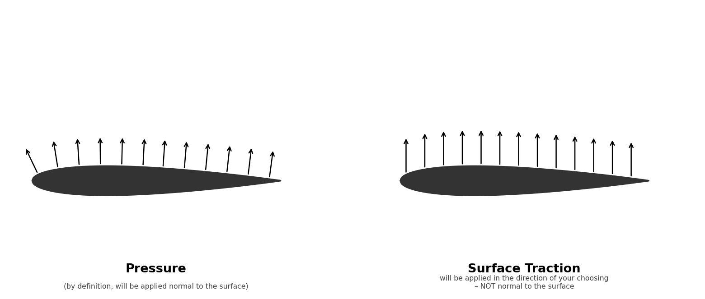
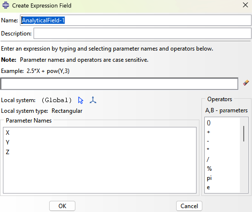
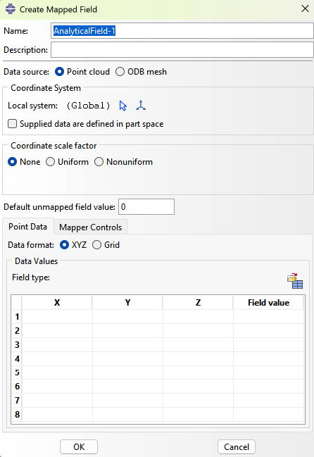
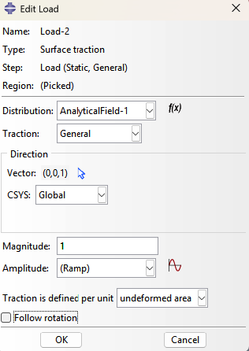

Applying Loads
This page covers how to apply different types of mechanical loads in Abaqus, including the aerodynamic pressure and surface traction loads used in aerospace structural analysis.
Where can I apply loads in abaqus? What is the difference between surface and sets and node regions?
Loads can be applied to node sets, element sets, surfaces, reference points, or directly to geometry (in CAE, which maps to mesh entities at solve time).
Region Types Compared
| Region | References | Use For |
|---|---|---|
| Element Set | Whole elements | Body loads, gravity, material assignment |
| Node Set | Nodes | Displacement BCs, point loads, initial conditions |
| Surface | Element faces | Pressure, traction, contact, heat flux |
Key Distinction: Surfaces vs. Sets
- Surfaces carry face orientation (normal direction) — required for pressure loads and contact, where "which side" matters.
- Sets have no orientation — they're just a collection of nodes or elements.
- Node-based surfaces are a hybrid: node-referenced but surface-typed, used mainly for rigid body contact or shell interactions.
Practical Rule
Use a surface for anything acting on a face.
Use a set for anything acting on a point or whole element.
How do I apply a line load?
A line load (force per unit length) can only be applied to free surface edges in Abaqus. For interior locations, convert it to an equivalent pressure over a narrow strip:
- Choose a strip width w and partition your geometry to create that strip
- Calculate the equivalent pressure:
p = q / w - where
qis the line load (force/length) andwis the strip width - Example: 12 lbf/in over a 2 in strip = 6 lbf/in²
- Apply this pressure to the partitioned strip face in the Load Module
Pressure vs. Surface Traction
Pressure always acts normal to the element face — Abaqus handles the direction automatically based on face orientation.
Surface Traction acts in a fixed global direction you specify, independent of element orientation. Use traction when you need the load to remain normal to a defined plane rather than following each element's local normal — which matters when your mesh is curved but your load direction is fixed.

Analytical Fields in Abaqus
An Analytical Field lets you define a spatially varying quantity — pressure, temperature, thickness — as a function of position rather than a single uniform value. Instead of one number applied everywhere, the field evaluates a value at each point on the surface.
There are two types:
Expression Field — You write a math expression using global coordinates (X, Y, Z). Abaqus evaluates it at every integration point.
- Use when you have an equation (e.g., 0.5 * 1.225 * 100^2 * Cp(X,Y))
- Best for idealized or hand-calculated distributions

Mapped Field — You import discrete data (e.g., from CFD) and Abaqus interpolates between data points onto your mesh. - Use when you have a point cloud or grid of values from an external solver - Requires an XY or XYZ data file; Abaqus handles the interpolation

The key difference: Expression is equation-driven, Mapped is data-driven.
Applying a Spatially Varying Aerodynamic Load
Create the Analytical Field first:
- Go to Tools → Analytical Field → Create
- Select Expression or Mapped depending on your data source
- For Expression: enter your formula using
X,Y,Zas spatial variables - For Mapped: import your data file and define the coordinate system
- Name the field and click OK
For example you might have "(0.2000) * (11.9048 * (1.13662 - 0.31831pow((X/84),2) - 0.07958pow((X/84),4))) * (1 - 3(Y/20)) + (0.008928) * (1 - 5(Y/20))"
Apply it as a Surface Traction:
- Go to Load → Create Load
- Set category to Mechanical, type to Surface Traction
- Click Continue and select your aerodynamic surface faces
- Set Traction to General
- Set Direction to your fixed global normal vector (e.g.,
0, 0, -1) - Set Distribution to your analytical field
- Enter magnitude as
1.0if the field already encodes full pressure values - Click OK
- Turn off follow rotation and select Traction is defined per unit "undeformed area"

My load arrows aren't changing when I update the magnitude — is something wrong?
No — this is expected behavior in Abaqus/CAE. Load arrow sizes are uniform and unrelated to the prescribed magnitude. They are direction indicators only. The exception is when an analytical field is used, in which case arrow sizes scale with the field value.